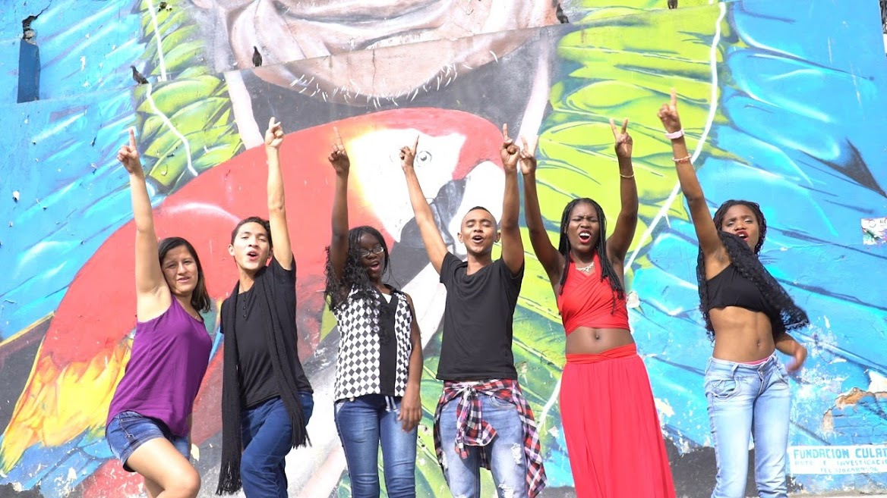
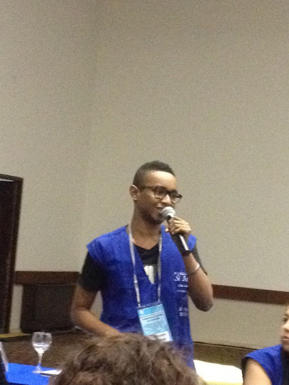
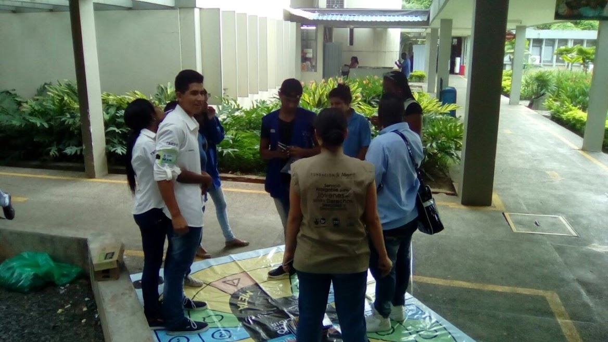

La era del caos termina con mi yo liberado
Hola, mi nombre es Robinson Sanchez Valencia, tengo 23 años. Soy de la ciudad de Cali. Vivo en un sector popular de la ciudad, contexto que me llevó a cuestionarme las realidades que vivimos, por lo cual, me fui uniendo a espacios de sensibilidad, reflexión, crítica y construcción de propuestas que de alguna u otra manera permitirán tramitar lo que como comunidades marginalizadas y empobrecidas hemos vivido.
Ese interés personal y el camino que comencé a recorrer me formaron en un líder, un agente político y un defensor por mi mismo y por las demás personas.
Actualmente estudio lic. educación popular en la Universidad Del Valle, una carrera que llegó a mí para sumarle enormemente a mi interés por cambios posibles y apuestas y construcciones comunes, colectivas.
Me considero un luchador de la vida, alguien que lucha constantemente por sentirse propio en cada espacio que habita, por ser más, por ser más negro, por ser más marica, por ser más empatico con otras realidades.


